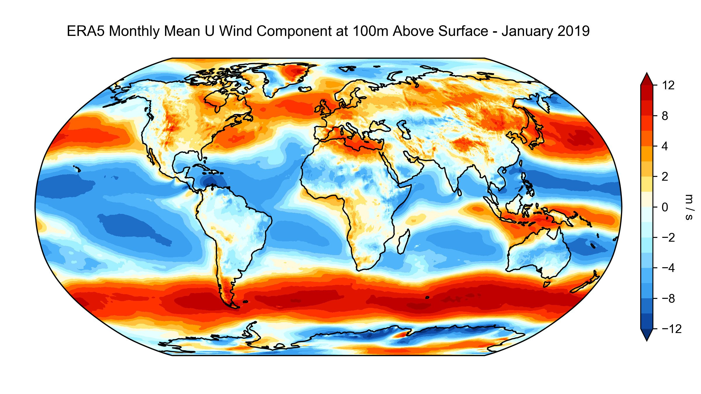

Climate data analysis
Contents
Climate data analysis¶
In this demo, we will be investigating the world’s climate. The data contains gridded monthly air temperature and precipitation for the 1959-2021 time period from the Copernicus Climate Change Service.
{kind=link}
xarray¶
The best Python package for this task is
xarraywhich introduces labels in the form of dimensions, coordinates, and attributes on top of raw NumPy-like arrays, a bit likePandas.xarraycan be used read, write, and analyze any scientific datasets stored in.ncor.hdfformat.Almost all climate data (and some remote sensing data) are stored in these formats.
{kind=link}
# Import package
import xarray as xr
import numpy as np
import matplotlib.pyplot as plt
from mpl_toolkits.axes_grid1 import make_axes_locatable
# Read data
xds = xr.open_dataset('data/world_climate.nc')
Note
The data for this demo can be accessed here.
Basic information about Dataset¶
type(xds)
xarray.core.dataset.Dataset
xds.dims
Frozen({'longitude': 1440, 'latitude': 721, 'time': 756})
xds.coords
Coordinates:
* longitude (longitude) float32 0.0 0.25 0.5 0.75 ... 359.0 359.2 359.5 359.8
* latitude (latitude) float32 90.0 89.75 89.5 89.25 ... -89.5 -89.75 -90.0
* time (time) datetime64[ns] 1959-01-01 1959-02-01 ... 2021-12-01
All information can be printed using the keys() function.
xds.keys
<bound method Mapping.keys of <xarray.Dataset>
Dimensions: (longitude: 1440, latitude: 721, time: 756)
Coordinates:
* longitude (longitude) float32 0.0 0.25 0.5 0.75 ... 359.0 359.2 359.5 359.8
* latitude (latitude) float32 90.0 89.75 89.5 89.25 ... -89.5 -89.75 -90.0
* time (time) datetime64[ns] 1959-01-01 1959-02-01 ... 2021-12-01
Data variables:
t2m (time, latitude, longitude) float32 ...
mtpr (time, latitude, longitude) float32 ...
Attributes:
Conventions: CF-1.6
history: 2023-01-28 21:51:01 GMT by grib_to_netcdf-2.25.1: /opt/ecmw...>
Note
t2m stands for 2 m above the surface, the standard height used by temperature sensors. It is a common metric used in climatology but note that it is different from the surface temperature which would be the temperature of the ground surface.
Since we are using an interactive notebook, a more convenient way of finding information about our dataset is to just execute the variable name.
xds
<xarray.Dataset>
Dimensions: (longitude: 1440, latitude: 721, time: 756)
Coordinates:
* longitude (longitude) float32 0.0 0.25 0.5 0.75 ... 359.0 359.2 359.5 359.8
* latitude (latitude) float32 90.0 89.75 89.5 89.25 ... -89.5 -89.75 -90.0
* time (time) datetime64[ns] 1959-01-01 1959-02-01 ... 2021-12-01
Data variables:
t2m (time, latitude, longitude) float32 ...
mtpr (time, latitude, longitude) float32 ...
Attributes:
Conventions: CF-1.6
history: 2023-01-28 21:51:01 GMT by grib_to_netcdf-2.25.1: /opt/ecmw...Basic information about DataArray¶
type(xds['latitude'])
xarray.core.dataarray.DataArray
xds['latitude']
<xarray.DataArray 'latitude' (latitude: 721)>
array([ 90. , 89.75, 89.5 , ..., -89.5 , -89.75, -90. ], dtype=float32)
Coordinates:
* latitude (latitude) float32 90.0 89.75 89.5 89.25 ... -89.5 -89.75 -90.0
Attributes:
units: degrees_north
long_name: latitudePrint as a NumPy array
type(xds['latitude'].values)
numpy.ndarray
First item in array
xds['latitude'].values[0]
90.0
Last item in array
xds['latitude'].values[-1]
-90.0
Shape of DataArray
xds['latitude'].values.shape
(721,)
Time¶
type(xds['time'].values[0])
numpy.datetime64
period = xds['time'].values[-1] - xds['time'].values[0]
period
numpy.timedelta64(1985472000000000000,'ns')
period.astype('timedelta64[Y]')
numpy.timedelta64(62,'Y')
Convert to integer
period.astype('timedelta64[Y]').astype(int)
62
Plot¶
fig, ax = plt.subplots(figsize=(10,6))
im1 = ax.imshow(xds['t2m'][0,:,:], cmap='RdYlBu_r')
ax.set_title("Air temperature", fontsize=14)
divider = make_axes_locatable(ax)
cax = divider.append_axes('right', size='5%', pad=0.05)
fig.colorbar(im1, cax=cax, orientation='vertical')
<matplotlib.colorbar.Colorbar at 0x7f8c68655160>

Stats¶
Compute mean air temperature for entire period
temp = xds['t2m']
mean_temp = temp.mean(['time'])
mean_temp
<xarray.DataArray 't2m' (latitude: 721, longitude: 1440)>
array([[258.48984, 258.48984, 258.48984, ..., 258.48984, 258.48984,
258.48984],
[258.49643, 258.49664, 258.49667, ..., 258.496 , 258.4962 ,
258.49622],
[258.54797, 258.5483 , 258.54865, ..., 258.54697, 258.54697,
258.5475 ],
...,
[228.08864, 228.08963, 228.09134, ..., 228.0861 , 228.08765,
228.08856],
[227.9827 , 227.98401, 227.9852 , ..., 227.9806 , 227.98123,
227.982 ],
[227.51724, 227.51724, 227.51724, ..., 227.51724, 227.51724,
227.51724]], dtype=float32)
Coordinates:
* longitude (longitude) float32 0.0 0.25 0.5 0.75 ... 359.0 359.2 359.5 359.8
* latitude (latitude) float32 90.0 89.75 89.5 89.25 ... -89.5 -89.75 -90.0mean_temp.shape
(721, 1440)
mean_temp[300, 100]
<xarray.DataArray 't2m' ()>
array(297.00378, dtype=float32)
Coordinates:
longitude float32 25.0
latitude float32 15.0# Plot
fig, ax = plt.subplots(figsize=(10,6))
im1 = ax.imshow(xds['t2m'][0,:,:], cmap='RdYlBu_r')
ax.scatter(100, 300, s=100, c='k')
ax.set_title("Air temperature", fontsize=14)
divider = make_axes_locatable(ax)
cax = divider.append_axes('right', size='5%', pad=0.05)
fig.colorbar(im1, cax=cax, orientation='vertical')
<matplotlib.colorbar.Colorbar at 0x7f8bf9648190>

Indexing multi-dimensional datasets¶
Since our xarray dataset is aware of the latitude and longitude coordinates, we can index values conveniently.
t = xds['t2m'].sel(latitude=27.7, longitude=85.3, method='nearest')
print('The mean annual air temperature in Kathmandu is %.2f F' %((t.mean('time').values - 273.15) * 9/5 + 32))
The mean annual air temperature in Kathmandu is 62.49 F
Convert to Pandas DataFrame
t.to_dataframe()
| longitude | latitude | t2m | |
|---|---|---|---|
| time | |||
| 1959-01-01 | 85.25 | 27.75 | 282.517151 |
| 1959-02-01 | 85.25 | 27.75 | 283.446350 |
| 1959-03-01 | 85.25 | 27.75 | 288.469727 |
| 1959-04-01 | 85.25 | 27.75 | 293.018768 |
| 1959-05-01 | 85.25 | 27.75 | 294.681458 |
| ... | ... | ... | ... |
| 2021-08-01 | 85.25 | 27.75 | 295.180450 |
| 2021-09-01 | 85.25 | 27.75 | 294.954773 |
| 2021-10-01 | 85.25 | 27.75 | 292.877716 |
| 2021-11-01 | 85.25 | 27.75 | 287.105011 |
| 2021-12-01 | 85.25 | 27.75 | 283.973572 |
756 rows × 3 columns
Where is the coldest place on Earth (1959-2021)?¶
To find the coldest place on Earth we have to find the grid cell with the lowest temperature. The argmin() function returns the indices of the minimum values of an array.
min_value = mean_temp.argmin()
print(min_value)
<xarray.DataArray 't2m' ()>
array(978122)
Perhaps unexpectedly, argmin() returns a single number instead of a row/column pair. We can use NumPy’s unravel_index() to convert this 1D index to 2D coordinates. It just needs to know the shape of our original 2D DataArray.
low_idx = np.unravel_index(min_value, mean_temp.shape)
print(low_idx)
(679, 362)
cold = mean_temp[low_idx[0], low_idx[1]].values
print('Coldest place on Earth is %.2f F' % ((cold - 273.15) * 9/5 + 32))
Coldest place on Earth is -64.64 F
fig, ax1 = plt.subplots(figsize=(10,6))
im1 = ax1.imshow(xds['t2m'][1,:,:], cmap='RdYlBu_r')
ax1.set_title("Coldest place on Earth (1959-2021)", fontsize=14)
ax1.scatter(low_idx[1], low_idx[0], s=100, color='k')
divider = make_axes_locatable(ax1)
cax = divider.append_axes('right', size='5%', pad=0.05)
fig.colorbar(im1, cax=cax, orientation='vertical')
<matplotlib.colorbar.Colorbar at 0x7f8c58675be0>

Which was the hottest month on Earth (1959-2021)?¶
To find the hottest month on Earth, we need to preserve the time dimension of our data. Instead we need average over the latitude and longitude dimensions.
hot = xds['t2m'].mean(['longitude','latitude'])
hot['time'][hot.argmax()].values
numpy.datetime64('2019-07-01T00:00:00.000000000')
Which was July 2019!!
Which was the hottest year on Earth (1959-2021)?¶
There are a couple of ways to find the hottest year. The first is to use the groupby function.
temp_yearly = xds['t2m'].groupby('time.year').mean()
hot = temp_yearly.mean(['longitude','latitude'])
hot['year'][hot.argmax()].values
array(2016)
Note
Since we grouped by year, the time interval dimension was renamed to year.
Alternatively, we could use the resample function.
temp_yearly = xds['t2m'].resample(time="Y").mean()
hot = temp_yearly.mean(['longitude','latitude'])
hot['time'][hot.argmax()].values
numpy.datetime64('2016-12-31T00:00:00.000000000')